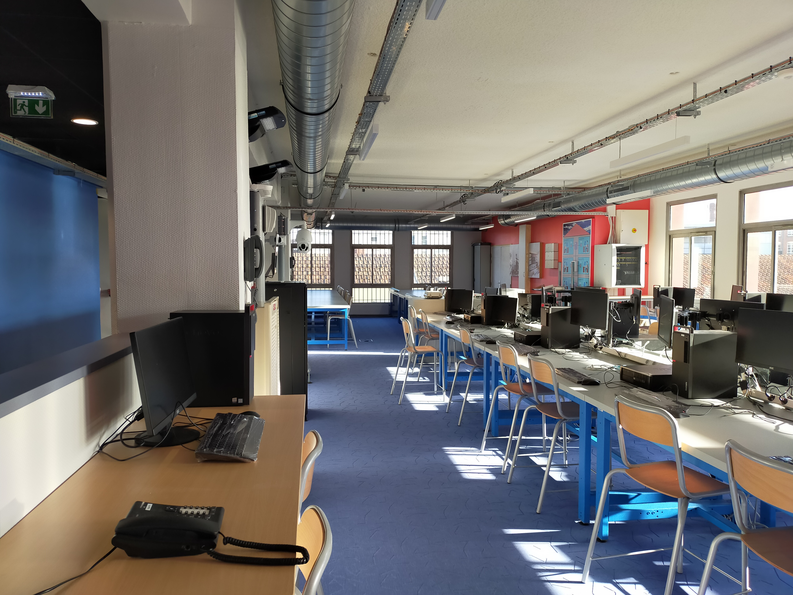
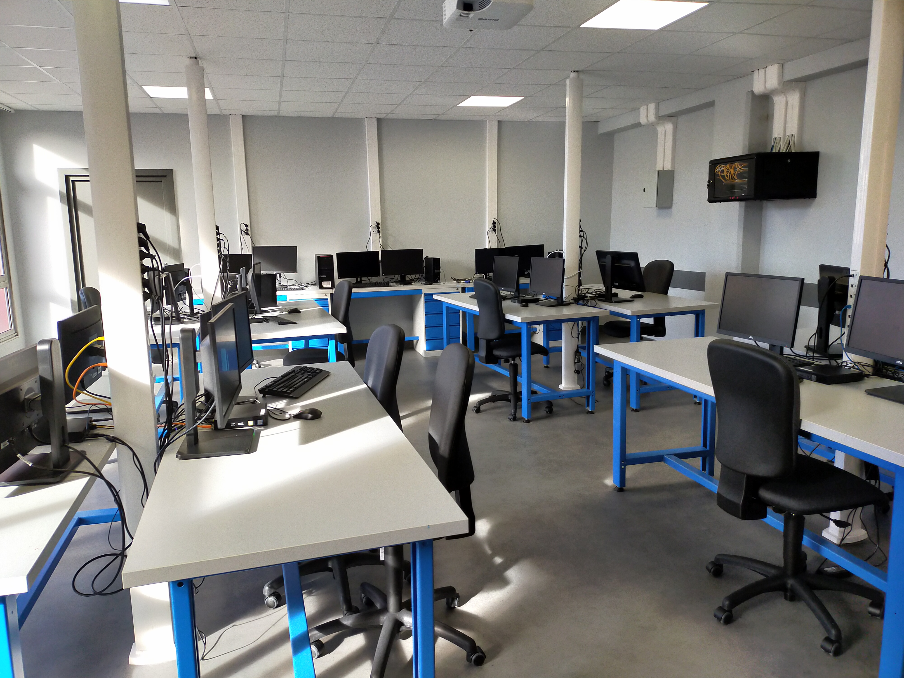

Lycée Baggio - BTS SNIR (bientôt CIEL à partir de 2024)
Les futur-e-s spécialistes en informatique et réseaux.
Le
BTS
SNIR
forme en deux ans des étudiants capables d'intervenir sur tous types de systèmes informatiques et réseaux.
L’option informatique et réseaux est tournée vers les
réseaux et leur sécurité,
les systèmes embarqués,
le cloud computing
et la programmation des systèmes.
Elle ne s’applique pas à l’informatique de gestion et de service à l’usager.
L’objectif de ce BTS
est de former l’élève au maintien en état de fonctionnement des systèmes et réseaux,
à la sécurisation ainsi qu’au bon fonctionnement de la programmation
(client/serveur, cloud computing).
À partir d’un cahier des charges et de contraintes de production,
le technicien supérieur définit des spécifications techniques.
Il peut installer un système d’exploitation, une bibliothèque logicielle,
un dispositif de correction ou de mise à jour de logiciel.
Il rédige un cahier de recette permettant de recenser les points à tester
en fonction des demandes identifiées dans le cahier des charges.
Il exerce son activité chez les prestataires informatiques : service interne d’une entreprise,
SSII...
Avec de l’expérience,
le diplômé peut se voir confier la responsabilité de projets
ou des fonctions de management d’équipe.
Un lycée reconnu
Le Lycée Baggio fut historiquement créé en tant qu'école d'apprentissage,
et s'est enrichi au fil des années par la création de filières professionnelles,
techniques et générales.
Aujourd'hui un nom reconnu à l'international
notemment par ses formations en industries graphiques,
l'établissement s'est doté, depuis 2019,
d'une section SNIR
faisant suite logique au Baccalauréat Professionnel Systèmes Numériques,
déjà présent depuis de nombreuses années.
Logo officiel du Lycée Baggio
Une grande palette d'expertise
Le BTS
SNIR
recouvre un très grand nombre de compétences et technologies
utilisées dans le monde entier et par toutes tailles d'entreprise.
Au contraire du
BTS
SIO,
dont l'objectif principal reste la gestion,
le BTS
SNIR
s'axe d'abord sur la maîtrise de technologies modernes.
Gestion des réseaux
Un·e titulaire du BTS
SNIR est expert en réseaux.
Un·e diplômé·e du BTS
SNIR peut
recueillir et analyser les besoins
d'une entreprise afin d'en déduire la structure et les équipements nécessaires
à la mise en réseau, la deviser et proposer diverses solutions.
Plan d'adressage ? Schéma réseau ?
L'implémentation du dit réseau fait également partie des ses compétences.
Câblage, installation, analyse et maintenance et ce sur toutes les
technologies modernes de connectivité
: Ethernet, fibre, sans-fil.
Enfin, nos étudiant·e·s sont évidemment formé·e·s à la
sécurisation de ces réseaux,
que ce soit via des outils ou des bonnes pratiques.
Administration des systèmes Windows
Qu'il s'agisse de postes de travail sous Windows,
ou d'un réseau complet d'entreprise administré par un serveur Windows
et un Active Directory,
nos étudiant·e·s sont formés sur l'administration complète d'un parc Windows,
avec gestion des droits et recommandations de sécurité.
Administration des systèmes Linux/Unix
Cette même expertise est également présente pour les systèmes
Linux/Unix comme Debian, Ubuntu, ou des distributions plus légères.
Interconnectivité et IoT
Dans la dynamique d'interconnectivité adoptée mondialement depuis des années,
des technologies attenantes telles que le Cloud et l'IoT
sont incontournables.
Nos étudiant·e·s sont formé·e·s sur ces technologies, en passant par LoraWAN ainsi que la création,
amélioration et maintenances de
services Web
par protocoles standards (RESTful...) ou propriétaires.
Développement applicatif
L'informatique industrielle ou simplement spécifique
est marquée par un fort usage des langages de bas niveau,
tels que C, C++. Nos étudiant·e·s sont donc fortement formé·e·s
à ces langages afin de réaliser, analyser,
débugger des applications lourdes.
Dans cette optique, nous avons également ajouté Java à la liste des langages
abordés sur les deux ans.
Développement web
L'informatique moderne est marquée par une omniprésence des technologies
autrefois réservées au web :
HTML/CSS
ou encore PHP
mais aussi et surtout Javascript.
Nos étudiant·e·s sont donc formé·e·s sur ces technologies ainsi qu'aux technologies
connexes mais utiles :
Git,
CI/CD,
containerisation (Docker, Kubernetes)...
Cybersécurité
Sur toutes les technologies abordées,
depuis les systèmes et réseaux jusqu'à l'applicatif web en passant par le Cloud,
nos étudiant·e·s sont formé·e·s à la sécurité de l'information,
pratiques et outils liés.
Un environnement tout équipé
Afin de fournir les meilleurs conditions,
nos plateaux techniques sont entièrement équipés,
avec de nombreux modules d'apprentissage et de mise en situation.
Comprenant 8 parties sur trois plateaux techniques,
d'une surface totale de plus de 800m² répartis sur deux étages,
sans compter les différents locaux techniques de pratique,
l'établissement dispose d'une grande variété d'ateliers.

Plateau SN du premier étage, comprenant des ateliers de surveillance et d'éclairage public
Les postes de travail sont tous équipés de manière performante en adéquation
avec les besoins exigeants et diversifiés de la formation.

Salle P213 équipée dans un esprit de développement
Un diplôme en formation initiale ou continue
La formation, en deux ans, est disponible en apprentissage.
Le contrat d'apprentissage est réalisé de préférence sur deux ans
dès la première année,
ou éventuellement sur un an si l'étudiant·e rejoint la formation
pour la seconde année.
Le recrutement des étudiant·e·s se fait par contact direct ou via Parcoursup.
Le recoupement des profils et fiches de poste se fait par
notre pôle UFA Apprentissage Baggio,
afin de garantir une sélection de profils adaptés aux besoins
de nos entreprises partenaires.
Le calendrier prévisionnel de l'année est réalisé et fourni
avant même le début du contrat et reste fixe toute l'année.
Une dérogation exceptionnelle est possible pour des besoins ponctuels à la demande
de l'entreprise.
Un diplôme en formation initiale ou continue
La formation, en deux ans, est disponible en apprentissage.
Le contrat d'apprentissage peut être conduit sur deux ans
lors de la première année, ou sur un an si l'étudiant rejoint la formation
pour la seconde année.